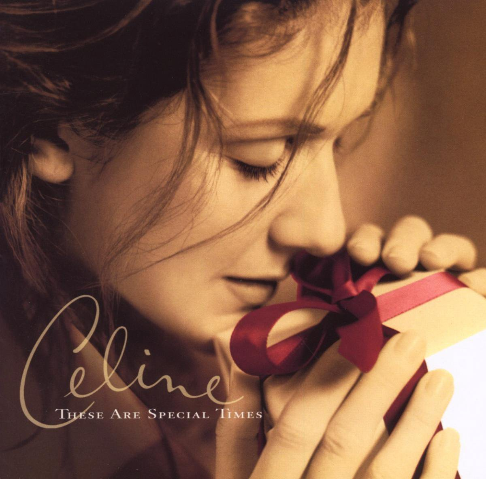

안녕하세요 한스입니다.
크리스마스 연휴는 잘 보내고 계신가요? 즐거운 크리스마스를 지내기 위해 좋은 노래가 빠질 수 없죠, 오늘은 그 중에서 다른 사람을 돌아볼 수 있는 셀린 디온 Celine Dion 의 노래 Don't Save It All for Christmas Day 를 소개해드리겠습니다.

Don't Save It All for Christmas Day - Celine Dion
Don't Save It All for Christmas Day - Lyrics 가사
Don't get so busy that you miss
Giving just a little kiss
To the ones you love
Don't even wait a little while
To give them just a little smile
A little is enough
How many people are crying
People are dying
How many people are asking for love
So don't save it all for Christmas Day
Find a way
To give a little love everyday
Don't save it all for Christmas Day
Find your way
'Cause holidays have come and gone
But love lives on
If you give on love
How could you wait another minute
A hug is warmer when you're in it
And, baby, that's a fact
And saying "I love you" is always better
Seasons, reasons, they don't matter
So don't hold back
How many people in this world
So needful in this world
How many people are praying for love
So don't save it all for Christmas Day
Find a way
To give a little love everyday
Don't save it all for Christmas Day
Find your way
'Cause holidays have come and gone
But love lives on
If you give on love
Let all the children know
Everywhere that they go
Their whole life long
Let them know love
Don't save it all for Christmas Day
Find a way
To give a little love everyday
Don't save it all for Christmas Day
Find your way
Don't save it all for Christmas Day
Find your way
'Cause holidays have come and gone
But love lives on
If you give on love
Love